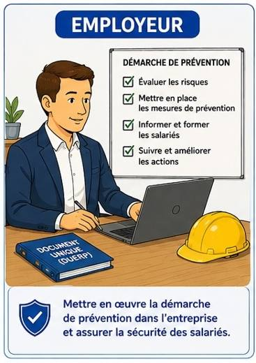

Situation — Un accident en cuisine

Dans un restaurant, une salariée glisse sur un sol humide. Le manager sécurise la zone, un collègue prévient le responsable, et l’employeur cherche comment éviter que cela recommence.
Cours standard adapté : mêmes objectifs que le programme CAP, textes courts, questions guidées, indices, corrigés, explications concrètes et audio sur les blocs.
Lire dans l’ordre. Chaque document est suivi de ses questions. Les images aident à comprendre, mais le texte suffit pour répondre.
Utiliser les aides. Ouvrir l’indice pour démarrer, le corrigé pour vérifier, puis l’explication pour comprendre avec un exemple concret.
Traiter l’information : repérer une information utile dans un document.
Analyser une situation : comprendre le problème, les personnes concernées et les causes possibles.
Mettre en relation : faire le lien entre une information du document et une connaissance du cours.

Dans un restaurant, une salariée glisse sur un sol humide. Le manager sécurise la zone, un collègue prévient le responsable, et l’employeur cherche comment éviter que cela recommence.
1. À partir de la situation,
1.1C2Identifier trois acteurs présents dans la situation.
Chercher les personnes qui agissent ou décident.
Salariée, collègue, manager/responsable, employeur.
Exemple : un collègue peut alerter ; l’employeur doit organiser la prévention.
1.2C3Associer un rôle à chaque acteur.
| Acteur | Rôle |
|---|---|
Dire ce que chaque personne fait pour prévenir ou réagir.
Salarié : signale/applique. Manager : organise localement. Employeur : décide et met en place la prévention.
Exemple : le manager peut faire nettoyer et baliser ; l’employeur peut changer l’organisation ou le matériel.
Les acteurs internes sont dans l’entreprise : employeur, salariés, encadrement, référent sécurité, sauveteur secouriste du travail, membres du CSE quand il existe.
Le CSE représente les salariés et peut contribuer aux questions de santé, sécurité et conditions de travail.
2. À partir du document 1,
2.1C1Relever quatre acteurs internes.
Chercher les personnes ou instances dans l’entreprise.
Employeur, salariés, encadrement, référent sécurité, SST, CSE.
Exemple : un SST est formé pour porter les premiers secours dans l’entreprise.
2.2C1Indiquer le rôle général du CSE.
Chercher qui le CSE représente.
Le CSE représente les salariés et contribue aux questions de santé, sécurité et conditions de travail.
Exemple : le CSE peut faire remonter des problèmes de sécurité observés par les salariés.
Traiter l’information : repérer une information utile dans un document.
Mettre en relation : faire le lien entre une information du document et une connaissance du cours.
Argumenter : donner une idée et l’appuyer avec une raison.
Le service de prévention et de santé au travail conseille l’employeur, les travailleurs et leurs représentants. Il participe à la prévention des risques professionnels, au suivi de l’état de santé et au maintien dans l’emploi.
Le médecin du travail a un rôle préventif. Il peut proposer des adaptations du poste si l’état de santé du salarié le nécessite.
1. À partir du document 2,
1.1C1Citer trois missions du SPST.
Chercher les verbes d’action du service.
Conseiller, prévenir les risques, suivre la santé, aider au maintien dans l’emploi.
Exemple : si un salarié a une restriction médicale, le SPST peut proposer une adaptation du poste.
1.2C3Expliquer pourquoi le médecin du travail n’est pas le médecin traitant.
Penser au rôle de prévention dans l’entreprise.
Le médecin du travail agit pour prévenir les risques liés au travail et adapter le poste ; le médecin traitant soigne le patient dans son parcours de santé général.
Exemple : le médecin traitant soigne une douleur ; le médecin du travail peut conseiller une adaptation pour éviter que le poste aggrave cette douleur.
Des acteurs externes peuvent aider l’entreprise : inspection du travail, CARSAT, INRS, organismes de formation, intervenants en prévention des risques professionnels.
Ils peuvent conseiller, contrôler, former ou produire des ressources de prévention.
2. À partir du document 3,
2.1C1Relever trois acteurs externes.
Chercher les organismes extérieurs à l’entreprise.
Inspection du travail, CARSAT, INRS, organismes de formation, IPRP.
Exemple : l’INRS propose des ressources pour comprendre les risques professionnels.
2.2C5Argumenter pourquoi l’entreprise peut avoir besoin d’un acteur externe.
Penser à l’expertise, au conseil ou au contrôle.
Elle peut avoir besoin d’un acteur externe pour obtenir un conseil spécialisé, une formation ou un contrôle réglementaire.
Exemple : pour un risque chimique complexe, un intervenant spécialisé peut aider à choisir une prévention adaptée.
Analyser une situation : comprendre le problème, les personnes concernées et les causes possibles.
Proposer une solution : choisir une action adaptée à une situation.
Communiquer : présenter une réponse claire avec le vocabulaire attendu.
Pour une situation dangereuse immédiate, le salarié prévient son responsable ou le référent sécurité. Pour une question de santé liée au poste, il peut demander un avis au service de prévention et de santé au travail. Pour un désaccord grave sur le respect du droit du travail, l’inspection du travail peut être sollicitée.
1. À partir du document 4,
1.1C4Choisir le bon interlocuteur.
| Élément | Réponse |
|---|---|
| Sol glissant en cuisine | |
| Douleur liée au poste | |
| Question sur le respect du droit du travail |
Associer l’interlocuteur au type de problème.
Sol glissant : responsable/référent. Douleur liée au poste : SPST. Droit du travail : inspection du travail.
Exemple : pour un danger immédiat, prévenir vite le responsable permet de sécuriser la zone.
1.2C6Rédiger un message de signalement clair.
Dire le lieu, le danger et l’action demandée.
Exemple : “Dans la cuisine, le sol est mouillé près du lave-vaisselle ; il faut baliser et nettoyer pour éviter une chute.”
Exemple : un message clair aide l’équipe à agir rapidement et concrètement.